Abstract: Seasonal variations in births in a population have attracted attention of scholars for quite
some decades now, India being no exception. However, there have been very few analyses using large
scale data covering the entire Indian landscape. Recently released HMIS data from the Ministry of
Health and Family welfare, offers such an opportunity as it captures nearly all births on a monthly
basis at district and even sub – district level in all states and union territories. We use the data for
three years 2017-18 to 2019-20 to analyse the patterns of seasonality in births and compare the
patterns in Maharashtra with the Pan-Indian patterns (analysed elsewhere).
Maharashtra shares a trend of high birth peaks in the months of August to October and sharp dips in
the months of February-March which is seen predominantly in northern Indian States as well. Thereby
contraception drives followed by arranging stock of required vaccines for pregnancy could be
prioritized during November-January. There is of course interesting departure from these dominant
trends at regional level. These findings are of interest to both academic research and to the policy
domain.
Introduction: Births invariably preceded by conception is itself a consequence of cohabitation. For the
human population there is no biological interregnum across the seasons towards any of the three
steps. Yet, births do show seasonal patterns and it is of interest to see as to what these patterns are,
and what these could imply.
Seasonality in births have attracted attention of scholars all over the world for quite some time now
(Hughes et al 2014, Osei et al 2016), India being no exception (Anand et al 2000, Singh et al 2020).
Such an analysis is constrained however, by the absence of large-scale data for an entire population.
The literature usually reports analyses based on a sample or a survey data. Very few data have the
reach that HMIS data has at a granular level of sub-district on a monthly basis. We use this data for a
period of 36 months, April 2017 to March 2020; just before the onset of the current pandemic. While
there are considerable doubts about the quality of the HMIS data on various fronts, the reporting of
live births by gender is reasonably robust, and complete at least to the extent of revealing seasonal
patterns in births.
Data & Methodology: Monthly data from the Health Management Information System (HMIS) for
three financial years, 2017-18, 2018-19 and 2019-20, was utilized. HMIS is a web-based Monitoring
Information System by the Ministry of Health & Family Welfare (MoHFW), Government of India,
aiming to monitor the National Health Mission and other Health programmes and provide key inputs
for policy formulation and appropriate programme interventions.
The current study explores the seasonality of births in the state of Maharashtra. The primary outcome
variable of this study was the ‘total children born’, examined as per cent of the total annual births as
well as the absolute counts. The rural-urban variations were also analyzed for each district of the state.
The district-wise extent of variations in births have been studied by calculating and mapping the
standard deviations for each district
Results: Figure-1 shows the correlation between the district-wise number of children born in 2017-18 vis a vis those in 2018-19 and 2019-20. The data are almost consistent. The number of children born in Analysis of the seasonal variations in birth in Policy Brief Maharashtra – HMIS 2017-20 Maharashtra 2 Maharashtra per annum total live births comes to about 17.5 lakhs, fairly close to the census population projections of 0-1 age group, which is in the range of 17.5 lakhs to 17 lakhs for the year 2016-2021 (Population Projections for India and States, Census of India). In addition to this, Anemia Mukt Bharat also estimates live birth in Maharashtra is about 17.24 lakhs for the year 2019-20 and 2020-21 (Estimation of Denominators, Anemia Mukt Bharat).
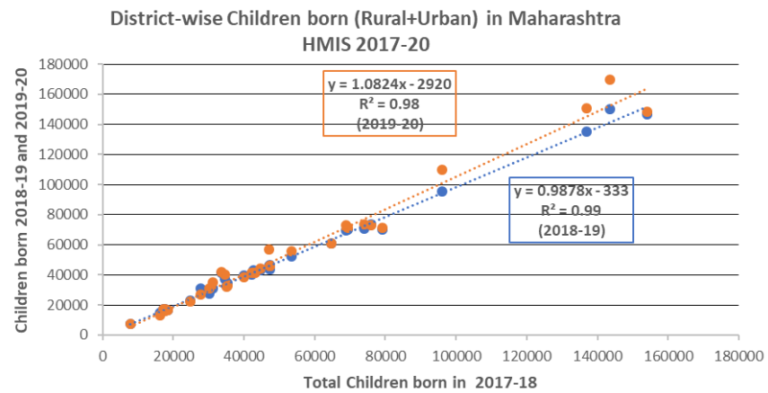
If births were happenning evenly across the year, the number of children born every month would approximately be 1/12th or 8.33 % of the children born annually. The larger the deviation from the 8.33% the larger is the seasonal fluctuation that can be measured through standard deviation.
Elsewhere we have analysed the state-wise seasonality pattern (forthcoming). We find a dominant northern pattern exemplified by Punjab (Figure-2a) on one hand and Karnataka (Figure-2b) on the other with no such distinct seasonality. The Punjab pattern is similar across rural as well as urban with a high value of standard deviation. The peak in August-September and the trough in February – March are clearly discernible corresponding to November-December favourable for conception and less likely coital frequency during May-June. In Karnataka, the births are quite evenly spaced, though there are small peaks and troughs with a low value of standard deviation.
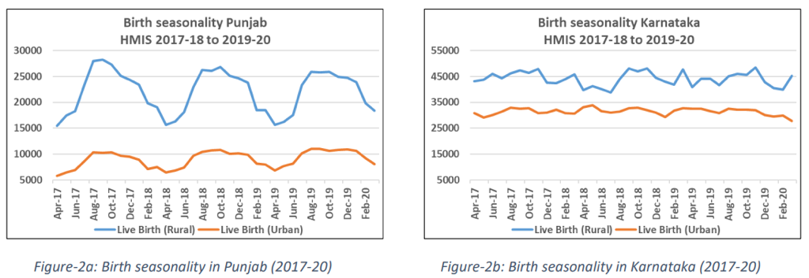
How does Maharashtra behave? It is a developed state with considerable urbanisation. It has the highest Gross State Domestic Product (GSDP) among 33 Indian States and Union Territories (Ministry of Statistics and Programme Implementation). Does it follow the strong northern agrarian pattern or the southern typology exemplofied by Karnataka (and Kerala, Goa as well; though not shown here)?
Data from HMIS for the total child population shows the regular dips during Feb-March and peaks during September-November for live births (Figure-3). Similar peaks and dips are observed for UrbanRural live births as shown in Figure-4.
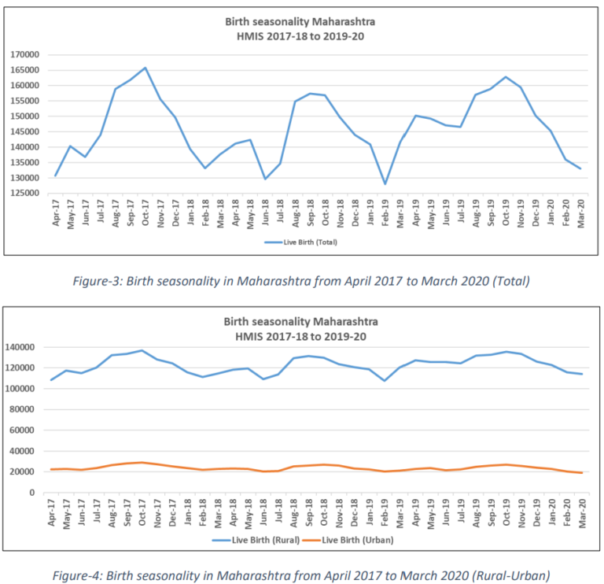
Interestingly, if we look at the plot of births in a given month as a % of the annual births in that year, the rural and the urban patterns are nearly identical (Figure-5).
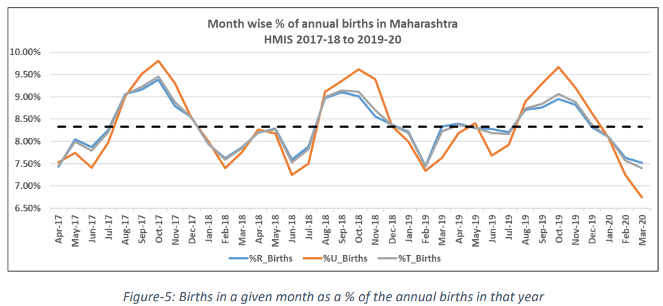
This pattern is not uniform throughout the state though. We have districts that follow the dominant
pattern such as Amravati (rural), Bid (rural), Chandrapur (rural), Gadchiroli (rural), Gondiya (rural),
Hingoli (rural), Nagpur (rural), Nandurbar (rural), Wardha (rural) and Yavatmal (rural); Jalgaon (urban), Jalna (urban), Nashik (urban), Raigarh (urban) and Thane (urban); Brihan Mumbai (both), Osmanabad (both), Palghar (both) and Satara (both). There are of course districts where the standard deviation is very low in the rural segment.
If we look at the districts in terms of the standard deviations, it clearly emerges that the urban areas
show considerable fluctuation (Table-1). This is likely on two counts; the number of births in urban
segment is small and reporting from private hospitals in urban areas is likely to be deficient. We have
looked at the month wise data in urban segments of some of the districts. In some of the districts e.g.
Nagpur, Aurangabad, Nanded and Sangli, these are quite low and there is a clear case for cross
verification in respect of the birth certificates issued in these districts.
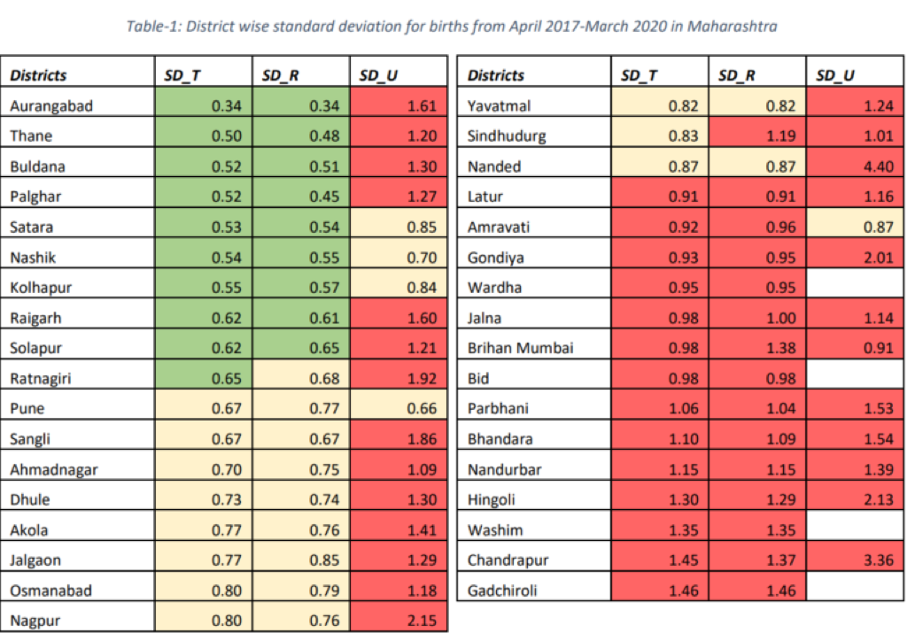
Figure-6 gives the maps of the standard deviation based on the low (<0.65) medium (>0.65 and <0.9) and high (>0.9). The maps for the total and rural area are similar while the urban data presents a different picture. Central and eastern Maharashtra, which also has a larger SC and ST population, shows a higher variation in live births throughout the 36-month period.
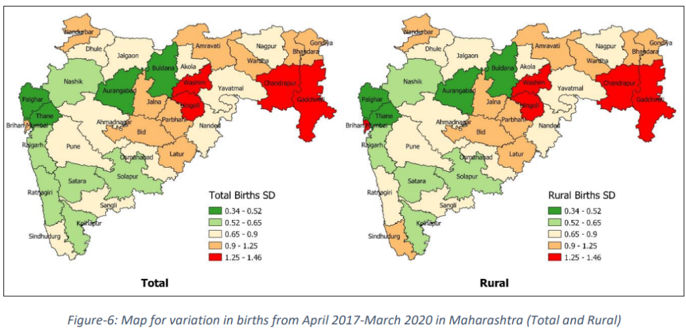
Urban data of Maharashtra is showing higher variation as shown in Figure-7. Few of the districts do not provide urban data. Districts showing higher variation for total and rural are also showing higher variation of births in urban. Interestingly, coastal belt of Maharashtra is showing higher variation of births whereas coastal belt shows lower variation in case of rural.
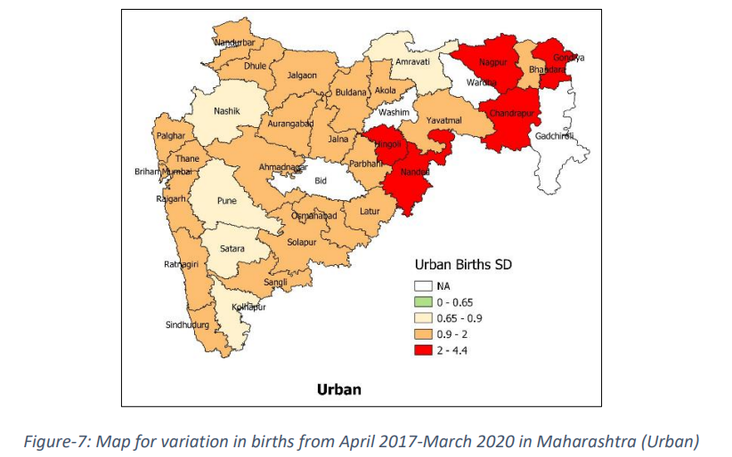
The patterns for individual districts can be seen in annexure, separately for the rural and the urban segment.
Discussions and conclusion: We see a strong seasonality in births in both rural and urban areas
conforming to the dominant northern Indian pattern corroborating the findings in the literature earlier
(Kosambi and Raghavachari 1952). As we move from the West to the East, the standard deviation
appears to increase. While the fluctuations in the urban births is quite high there is a need to
triangulate the urban data.
The pattern also has important implications of health system planning in terms of various services.
The persistence of birth peaks in the months of August to October call for increasing the reach of
contraception services in the months of December – February. It is also noteworthy, that across the
country we notice a strong trough in the months of February and March indicative of low incidence of
conception during the peak summer months of May and June.
We also need to see if the birth seasonality coincides with seasonality in still births, coverage of BCG
vaccine and other vaccines a child is expected to get is available at specified times. But that is a matter of separate scrutiny altogether.
The analysis above calls for further strengthening of the HMIS reporting system, triangulation of the
data, particularly in the urban segment to improve the coverage and prepositioning the health system
in terms of different services that need to reach married couples, pregnant women and the infants in
the first year of their life.
Authors:
Islam D., Nambiar A., Roy Choudhury D., Agnihotri S. B.
Danyal Bin Islam (danyalbinislam@gmail.com) is a post graduate student at CTARA IIT Bombay
pursuing his Master’s in Technology and Development and is a UNICEF-CTARA Fellow.
Apoorva Nambiar (apurvanambiar95@gmail.com) is a Doctoral Student at CTARA IIT Bombay (IITBMonash Research Academy, Joint PhD Program).
Dr. Dripta Roy Choudhury (rchoudhuryd@gmail.com) is a Post-Doctoral Fellow at CTARA IIT Bombay.
Prof. Satish B. Agnihotri is an Emeritus Fellow CTARA at IIT Bombay and works, inter alia, on Child
Malnutrition, Health and Nutrition Policy
References
1. Anand K, Kumar G, Kant S and Kapoor SK. Seasonality of Births and Possible Factors
Influencing it in a Rural Area of Haryana, India. Indian Pediatrics 2000; 37:306-312.
2. Hughes MM, Katz J, Mullany LC. et al. Seasonality of birth outcomes in rural Sarlahi District,
Nepal: a population-based prospective cohort. BMC Pregnancy Childbirth. 2014; 14: 310.
3. Kosambi DD and Raghavachari S. Seasonal variation in the Indian Birthrate. Ann Eugen, 1952;
16: 165-197.
4. Osei E, Agbemefle I, Kye-Duodu G. et al. Linear trends and seasonality of births and perinatal
outcomes in Upper East Region, Ghana from 2010 to 2014. BMC Pregnancy Childbirth.
2016; 16: 48.
5. Report of the Technical Group on Population Projections, Population Projections for India
And States 2011 – 2036, Census of India 2011.
https://nhm.gov.in/New_Updates_2018/Report_Population_Projection_2019.pdf Accessed
on 6th June 2021.
6. Estimation of Denominators, Anemia Mukt Bharat.
https://anemiamuktbharat.info/denominators/ Accessed on 6th June 2021.
7. MOSPI State Domestic Product, Ministry of Statistics and Programme Implementation.
http://mospi.nic.in/ Accessed on 6th June 2021.
8. Singh BP, Gupta K and Roy TK. Seasonality in Conception: Comparison of Pattern in Uttar
Pradesh and Kerala. Int J Recent Sci Res. 2020; 11(07): 39281-39283.
Suggested citation: Islam, D., Nambiar, A., Choudhury, D., & Agnihotri, S. B. (2024). Analysis of the seasonal variations in birth in Maharashtra – HMIS 2017-20. Nutrition Group, IIT Bombay.

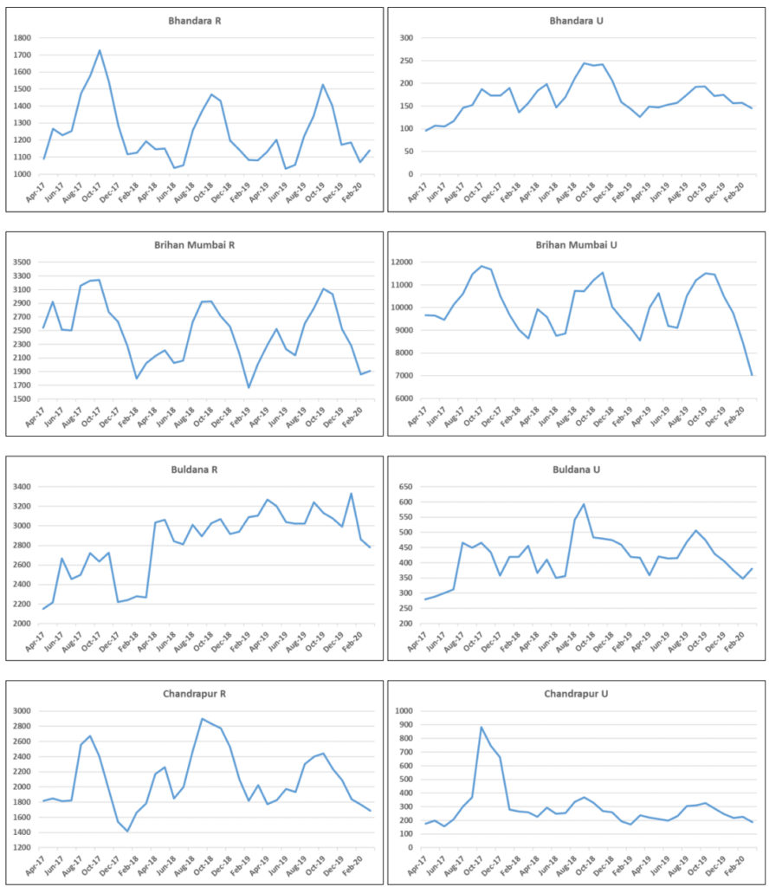
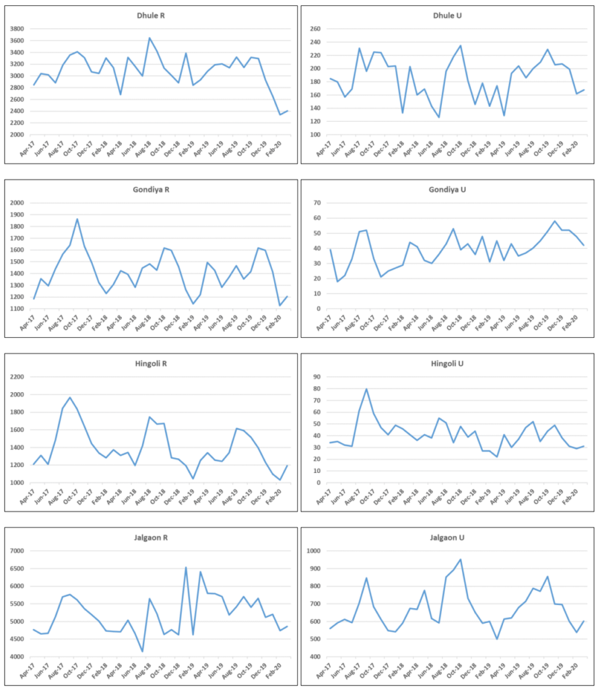

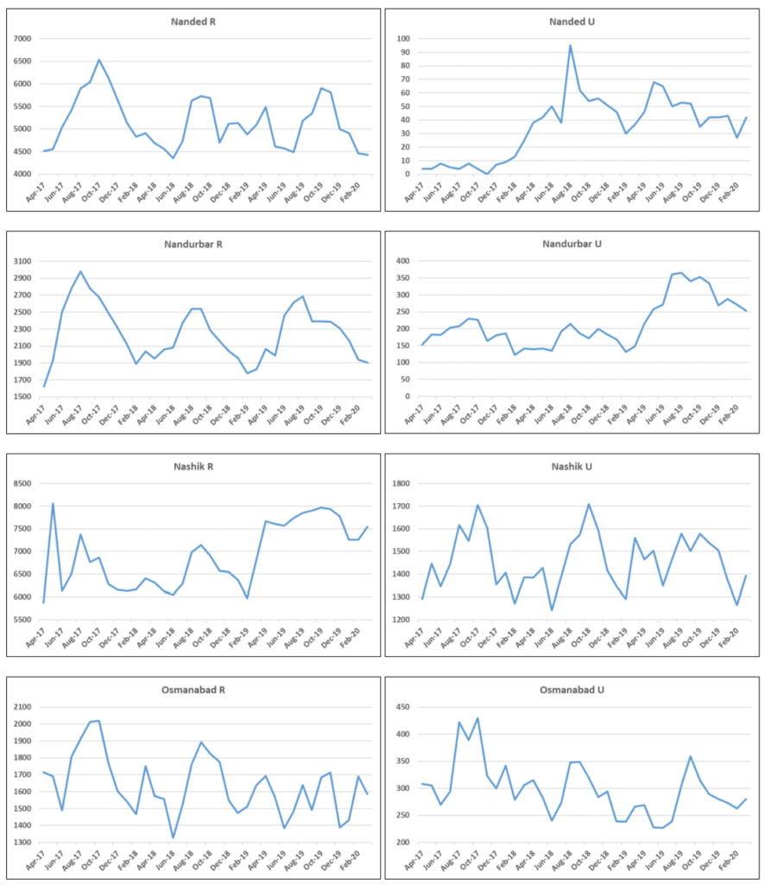

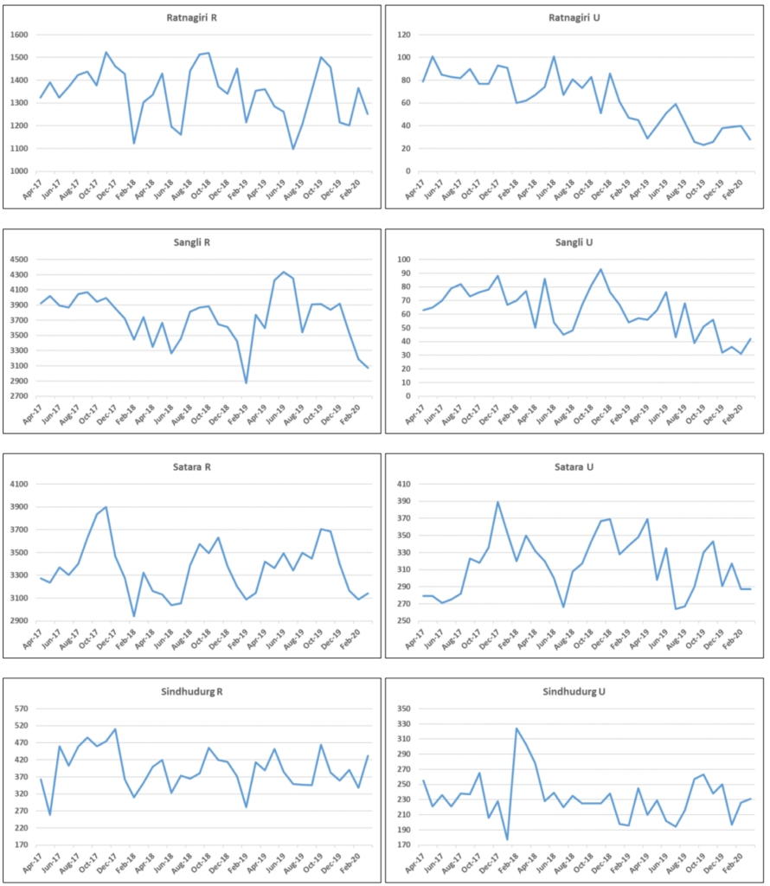
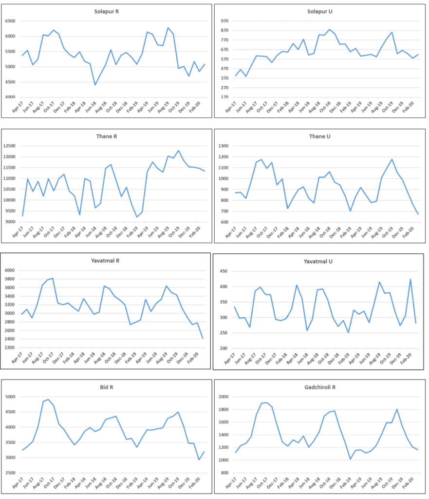
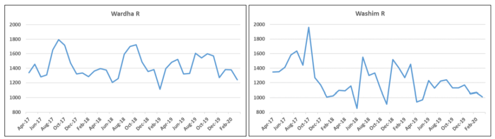